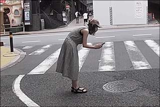

「ディア」
鉄と
コンクリートの
守り人
「鉄とコンクリートの守り人」とは日本にあるすべてのマンホール蓋を守り人（プレイヤー）が力をあわせて撮影・投稿し、その実績を称えあえるアプリです。
「マンホールコンプ」というゲーム性を取り入れ、写真の投稿やレビューによって日本全国のマンホール地図を力をあわせて完成させましょう。
マンホール蓋の投稿者が守り人として登録されます。
獲得GPによりレベルがアップし、タスクをこなしていくとバッジが獲得できます。
背景
迫り来るインフラ・クライシス。公共インフラの深刻な老朽化。 我々の足元にあるマンホールも日々老朽化しているインフラの一つです。ひび割れや破損しているマンホールが足元にあるかもしれない危険な状態です。
そんなマンホール、社会を救えるのは我々市民一人一人です。マンホールの現状を調査し把握しておくことで、今後の重大事故を劇的に減らすことができます。
マンホールの「守り人」となり、あなたのまちの救世主となりえるか！？
HOW
TO
JOIN
参加方法
-
STEP 01
ゲームに登録 -
STEP 02
プレイガイドをチェック -
STEP 03
近くのマンホールを撮影
or
みんなの写真をレビュー
HOW
TO
PLAY
遊び方
3つの遊び方
-
マンホール写真投稿
 近くのマンホールまで行き、場所と状況がわかる写真とマンホール蓋の写真をアップロードします！
-
マンホール探索をして位置登録
アプリ内で、衛星写真を使ったマンホール探索をして位置登録をしましょう！
-
投稿写真のレビュー
現場の守り人が投稿してくれた写真をレビューします！十人十色の味が出ている写真を評価しましょう！
ゲームの目標
近くのマンホールまで行き、場所と状況がわかる写真とマンホール蓋の写真をアップロードします！
NOTES
とても大切な注意事項
安心、安全に楽しくプレイしてもらうために、
下記のことを必ずお守りください。
-

車通りの多い道路上にあるマンホール蓋の撮影は危険ですので、絶対に行わないでください。
-

歩きながらスマホを使うのは危険です。マンホールの位置は都度止まってから確認してください。
-
待っている方がいたら、感謝の気持ちを伝えてください。
-

写真を撮るときは、周囲の人々の迷惑にならないように注意してください。
いつもあなたの近くで、あなたの社会生活を支えてくれているインフラ、 この老朽化が深刻に進んでいます。
老朽インフラの崩壊は時間の問題であり、我々の生活に直接的被害をもたらします。
社会インフラの多くは自治体の予算（料金収入）のもと、整備・管理・維持されています。
経済成長が停滞し、少子高齢化が進み、人口も減少し始めた日本におけるインフラ維持はかなり深刻な状態です。
老朽化に対する最も有効な対策は更新投資ですが、料金収入が下がり予算が限られる中で、
どこから更新したら良いかわからないというのが現状です。
しかし、市民の気配りによりインフラ異常を事前に察知できれば、
更新優先順位がわかり、 重大事故を未然に防ぐことができます。
そこでWEFは市民でも気軽にインフラの状態を投稿できるアプリを開発しました。
今ここで我々のアプリを片手に市民が立ち上がることを熱望します。
交通ルールやマナー等を守りながら
安全とともに本ゲームをお楽しみください。
EVENT
イベント
「#マンホール聖戦」
開催中！
さあ、
#マンホール聖戦 に参加して
日本のマンホールを
一緒に守ろう